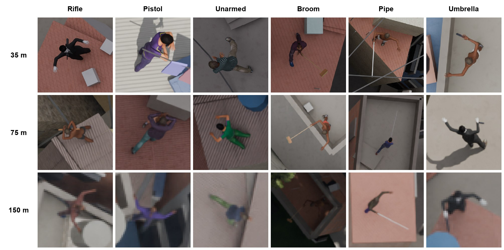
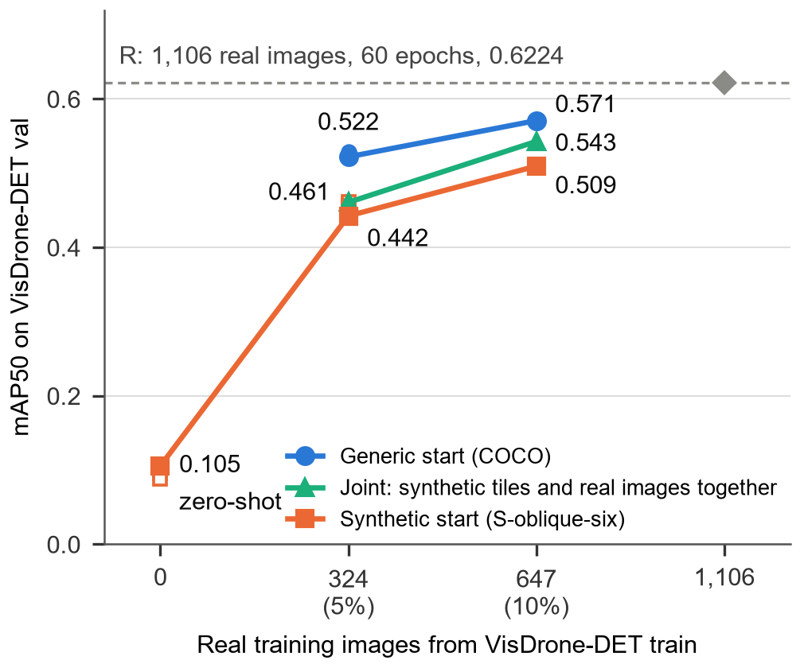

Extended Abstract
Luciano Martins Figueira (corresponding author) and Hélio Arthur Reis Irigaray
Fundação Getulio Vargas, Brazilian School of Public and Business Administration (FGV EBAPE), Rio de Janeiro, Brazil
Abstract. Aerial systems already fly over police operations in Rio de Janeiro, where whether a person is armed bears on the decision to use lethal force. Training a detector for that judgement over a dense informal settlement is constrained before any algorithm is chosen: imagery of residents cannot be collected with meaningful consent, no public benchmark shows such a settlement or annotates a carried firearm at survey altitude, and the altitude, lens, camera pitch and light of each flight decide what reaches the detector. We treat this as a measurable question on procedurally generated synthetic corpora. We characterise the target by ground sampling distance (GSD), camera pitch and illumination, train detectors on synthetic imagery alone, score them against a ceiling trained on as many real images on an urban, mostly oblique benchmark and on a nadir one, and measure synthetically how often a figure carrying an ordinary elongated object is called armed. Straight down from 150 m (4.88 cm per pixel) a person spans 17.6 by 17.5 pixels. Synthetic-only training recovered 2.2, 8.8 and 15.3 per cent of the ceiling on the urban benchmark, and on the nadir benchmark the order of the two camera geometries reversed. With 5 or 10 per cent of real images, the synthetic corpus lowered accuracy under four fine-tuning schedules. On held-out frames, detectors called 24.5, 12.5 and 25.3 per cent of ordinary objects armed at 4.88, 2.44 and 1.14 cm per pixel. We state the conditions under which the capability was not shown, and what a police command, the court that supervises operations and the residents can require of an aerial claim of an armed person before it enters a decision to use force.
Keywords: public security; algorithmic discretion; synthetic data; aerial object detection; ground sampling distance; dual use; informal settlements
The Civil Police of the State of Rio de Janeiro flies unmanned aerial vehicles (UAVs) for intelligence and the real-time monitoring of operations (CNN, 2026), in a state that recorded 798 deaths from police intervention in 2025 (Fórum Brasileiro de Segurança Pública, 2026) and, on 28 October 2025, the deadliest police operation on record in Brazil (Fichino, 2025). We take as a premise that whether the person engaged was armed is a central category in decisions to use lethal force: a visual judgement made at speed, in narrow alleys and on rooftops, among residents who are present throughout, and one that aerial systems are increasingly expected to support, with drone datasets of armed persons built for law-enforcement use (Faheem et al., 2025; AlJundi et al., 2025) and game-engine corpora generated for aerial detection (Kim et al., 2026). What is rarely stated alongside that premise, and what decides whether the distinction is visible at all, is the acquisition condition: the altitude of the UAV, its sensor and lens, the ground sampling distance (GSD, the width of ground one pixel spans) that these produce, the camera pitch, straight down (nadir) or oblique, and the illumination. A claim that omits it cannot be checked.
The vantage point of the Global South names three absences. No consented aerial imagery of the territory exists or can be obtained ethically: a resident asked to consent to aerial photography by or for the institution that conducts those operations, in a territory under the armed control of a faction, can neither refuse freely nor foresee the use of the image. No public benchmark shows a favela; the two on which transfer can be measured show a dense city seen mostly obliquely (Zhu et al., 2022) or people in wilderness seen from directly above (Božić-Štulić, Marušić, & Gotovac, 2019). And no public test set annotates a carried firearm at the GSD of a survey flight. Every training image here is therefore synthetic, which trades the consent problem for the transfer problem.
Three questions follow. RQ1. How much of the person-detection accuracy that real training images give does a detector trained only on synthetic imagery of a dense settlement recover on real aerial benchmarks, and which acquisition parameters move that fraction? RQ2. Once 5 or 10 per cent of the real training images exist, does the synthetic corpus add accuracy, as pretraining or mixed into the training set? RQ3. On synthetic imagery, at which GSD can a detector tell a figure carrying a firearm from one carrying an ordinary elongated object, and at what rate does it call the latter armed?
The contribution to management and public administration is not a detector. It is the position that stating the conditions under which a capability has not been shown is a checkable contribution of the same kind as demonstrating one, and the one that bears on dual use. The public administration literature on algorithmic discretion in policing studies what an instrument does to the officer's judgement (Meijer, Lorenz, & Wessels, 2021; Selten, Robeer, & Grimmelikhuijsen, 2023) on the premise that the instrument sees what it is said to see. For an armed person seen from survey altitude over a favela, no published evidence supports that premise. This study measures what would, and finds it absent at the acquisitions tested.
Synthetic training transfers to real imagery under domain randomisation (Tobin et al., 2017; Prakash et al., 2019), but for small aerial targets it recovers a fraction of what real data achieves: three detectors trained purely on 40,000 game-engine images reached 1.2, 2.4 and 10.2 points of mAP50 on VisDrone against 24.6, 48.6 and 43.9 for the same architectures trained on the real training split (Kiefer, Ott, & Zell, 2022). Where the synthetic fraction is won or lost has been ablated for vehicles: replacing photogrammetric geometry with generic assets cost 27.0 points of mAP50 on YOLO11, and removing variation in sun, weather and viewing angle cost 30.4 (Liao et al., 2026). Negative transfer (Z. Wang et al., 2019) recurs in aerial person detection: mixing synthetic with real images fell below the real-only baseline in low-shot training (Shen et al., 2023a, 2023b), and pretraining on public synthetic corpora scored below training from scratch at most detector sizes (Yim et al., 2026).
Weapon detection has its own benchmarks, and none we found is aerial at survey altitude. Those that annotate a carried firearm are recorded from surveillance viewpoints; the aerial datasets that label an armed person were captured between 2 and 8 m above the ground (T. Li et al., 2021; Torkst et al., 2026); and the drone datasets with annotated firearms are restricted to law-enforcement agencies or unreleased (Faheem et al., 2025; AlJundi et al., 2025). Setting weapons against objects handled in the same way has precedents at ground level (Pérez-Hernández et al., 2020) and at hover height, where a rifle replica was set against a visually similar umbrella (Torkst et al., 2026). The GSD at which a carried firearm is separable from an ordinary object seen from the air had not been measured, and the public administration literature that follows the instrument into the officer's discretion (Meijer et al., 2021; Selten et al., 2023) and into the domestic use of drones (West & Bowman, 2016; Frazier, 2016) does not ask whether it sees what it is credited with seeing.
Constraints fixed before any corpus was generated bound the study. No imagery, geometry or address-level coordinate of the territory enters the generator, the corpora or any measurement; the only real data are two public benchmarks; nothing produced is treated as an operational tool; and neither the generator, the corpora nor the trained weights are released, a dual-use decision of the authors. The study involved no human participants and collected no personal data.
Generator. Scenes are generated procedurally in Blender 5.2 (Blender Foundation, 2026), headless under a deterministic seed, from public-domain assets alone (Poly Haven, n.d.; MakeHuman Community, 2026). Six settlements approximate the general morphology of a dense favela, not the geometry of any site: dwellings abutting their neighbours with alleys mostly between 0.5 and 1.2 m, sub-districts with independent orientations, upper storeys offset from the floor below and rooftops carrying water tanks, clotheslines, sheets and rubble. Six coherent illumination regimes (hard sun, low sun, overcast, heavy overcast, haze, rain) are swept in equal shares. The virtual camera reproduces a commercial survey payload at its wide setting (DJI, 2019); rendered at 3840 by 2160 pixels it gives 4.88, 2.44 and 1.14 cm per pixel from 150, 75 and 35 m in nadir, the GSDs that the altitude labels of this paper denote, and 3.90 cm per pixel nominal from 120 m obliquely. The same GSDs are reachable from 150 m by zooming, at the cost of footprint: 1.14 cm per pixel costs 73 times less ground per frame than the wide setting. Three classes are annotated: armed (five procedurally built firearms, recorded lengths 0.20 to 1.05 m), unarmed carrying nothing, and unarmed carrying one of nine elongated objects carried in this territory (brooms, pipe, reinforcement bar, planks, closed umbrellas, hoes, rolled mats, hose; 0.88 to 2.5 m), on a shared palette of materials so that dark or metallic surfaces alone cannot separate the classes. Boxes are projected from geometry, amodal within the frame, and instances with under 0.35 of the body visible are discarded. No sensor noise, motion blur or compression is simulated.
Corpora, detector and real data. Training corpora are matched by frames: 180 single-class frames in each of four configurations (nadir at 150 m from one settlement, the same over six settlements, oblique from one settlement, oblique over six) and 200 three-class frames at 35 m, rendered again at 75 and 150 m with every other setting held. The detector is YOLO11s (Jocher & Qiu, 2024), from COCO weights (Lin et al., 2014), trained on 1280-pixel tiles at native scale on one consumer GPU. The real test set is the validation split of VisDrone-DET (Zhu et al., 2022), 548 images and 13,969 persons; the ceiling R trains on 1,106 images drawn at random from its training split, the number of training tiles in the corpus of record. R's checkpoint was selected on the test split, which makes the denominator of every efficacy optimistic, while its untuned schedule and 1,106 images hold it below what the benchmark allows (a generic start fine-tuned on 647 real images reached 0.6224 against its 0.6311); the direction of the net bias is not known and is disclosed rather than argued away. The second real test set is HERIDAL, 1,647 nadir images of people in Mediterranean scrub taken from 40 to 65 m (Božić-Štulić et al., 2019; Pyrrö, 2021), used for zero-shot evaluation only. Held-out synthetic frames, 80 per GSD with shared frame indices, were rendered after the models they test had been trained.
Experiments and criteria. Experiment A scores the synthetic models zero-shot against R on both benchmarks, with three training seeds on each side of the geometry comparison. Experiment B fine-tunes on 5 per cent (324 images) and 10 per cent (647) of the real training split, from the synthetic weights and from COCO, under four schedules chosen on a disjoint selection slice, and trains jointly on synthetic tiles and the same real images. Experiment C scores the three-class models on whole frames at the default confidence of 0.25 and reports the rate at which a confusable object is called armed (the object rate), the armed recall and d′ with the correction of Hautus (1995); two checks fixed in advance test the result against two firearms never seen in training and against a re-render in which every object is carried exactly as a weapon. Experiment D measures detection by illumination regime on synthetic frames. Each criterion was fixed before the run it decides, and intervals are 95 per cent by resampling images or frames. A difference is called resolvable if the ranges over three training seeds do not overlap or the paired interval excludes zero, with 30 per cent of the smaller value as a descriptive third reading. No acceptable false-alarm rate was fixed, because what rate of residents carrying a household object marked as armed is tolerable is a normative decision for the public authority and for judicial control, not an engineering constant.
Before any detector, the acquisition fixes what there is to detect (Table 1). Seen straight down from 150 m at 4.88 cm per pixel, the median annotated person measures 17.6 by 17.5 pixels: the plan of a figure, not a standing one, with a height-to-width ratio of 0.98 in both nadir corpora against 1.95 and 2.20 on the two splits of the urban benchmark, whose camera is mostly tilted (Kiefer, Messmer, & Zell, 2021). In area the median synthetic instance (301 square pixels) matched the median benchmark instance (300), so what differs between the two is shape, not size. Halving the GSD from 9.76 to 4.88 cm per pixel took the share of instances whose shorter side falls below one stride of the detector's finest feature map (8 pixels) from 66.9 to 0.8 per cent; in the benchmark that share is 30.5 per cent. At 2.44 cm per pixel the median figure measures 47.6 by 41.7 pixels, and at 1.14, 121.8 by 103.1.
The weapon is smaller still. Measured end to end on the meshes (the rifles and the shotgun run longer than their recorded lengths because stock and magazine lie outside them), the two rifles span 1.07 m, the shotgun 1.17, the carbine 0.61 and the pistol 0.20, and none is wider than 0.05 m. At 4.88 cm per pixel a rifle therefore covers about 22 pixels in length and one in width, at 2.44 about 44 by 2 and at 1.14 about 94 by 4; the pistol covers 4 by 0.6, 8 by 1.2 and 17 by 2.6. At 150 m the widest firearm in the corpus is one pixel wide and the pistol barely half of one, and at 75 m they are about two: what survives the GSD is length, not form. These are extents of the mesh, not footprints in the frame, which depend on how the weapon is carried. Figure 1 shows the pixels the detector receives at the three GSDs.
| Corpus or benchmark | Camera, GSD (cm/px) | Median box (px) | Median height/width | Shorter side below 8 px |
|---|---|---|---|---|
| Pilot corpus, 150 m, 1920 by 1080 | nadir, 9.76 | 8.3 by 8.2 | 0.98 | 66.9% |
| Corpus of record, 150 m | nadir, 4.88 | 17.6 by 17.5 | 0.98 | 0.8% |
| Three-class corpora, 75 m | nadir, 2.44 | 47.6 by 41.7 | n.r. | n.r. |
| Three-class corpus, 35 m | nadir, 1.14 | 121.8 by 103.1 | n.r. | n.r. |
| Oblique, one settlement | 26 to 52°, 120 m, 3.90 nominal | 17.9 by 26.4 | 1.46 | 0.9% |
| Oblique, six settlements | 45 to 56°, 120 m, 3.90 nominal | 13.3 by 25.2 | 1.85 | 3.9% |
| VisDrone-DET train (real) | not recorded | 13.0 by 24.0 | 1.95 | n.r. |
| VisDrone-DET val, the test set (real) | not recorded | 12.0 by 25.0 | 2.20 | 30.5% |
n.r.: not reported in the full manuscript. The 75 m and 35 m rows pool the three classes.

RQ1, transfer from synthetic imagery alone. Trained on synthetic imagery alone, the detector recovered on the urban benchmark, as means of three training runs, 2.2 per cent of the ceiling at the nadir geometry (mAP50 0.0136 against 0.6311), 8.8 per cent when the same settlement was rendered obliquely (0.0555) and 15.3 per cent for the six-settlement oblique corpus (0.0966) (Table 2). The step from nadir to oblique added +0.0419 of mAP50 (+0.0368 to +0.0470) and the step from one settlement to six, obliquely, +0.0411 (+0.0367 to +0.0462): the two are of the same size in absolute terms, and the ratio of 4.08 that the first produces reflects a denominator near the floor. At nadir, six settlements against one added +0.0054, inside the range of the nadir training runs. On the nadir benchmark the order reversed: the nadir corpus reached 62.7 per cent of R (0.1997 against 0.3185) and the oblique corpus 42.1 per cent (0.1341), a difference of -0.0656 (-0.0840 to -0.0471) that passes the interval reading but not the seed reading, since the nadir runs spread from 0.0926 to 0.2672. On these two benchmarks what transfers is the geometry that matches the test set, and the oblique arm, calibrated on the urban benchmark's training split, says what that benchmark rewards and not how a settlement should be flown. More frames still raise the oblique score at 152 frames, by 0.0140 of mAP50 per doubling on a logarithmic fit, so each further doubling buys little.
RQ2, the corpus once real images exist. Given 324 or 647 real images, the model that started from the synthetic weights finished below the generic start at both volumes, 0.4424 against 0.5220 at 5 per cent and 0.5095 against 0.5709 at 10 under the original schedule, and so did the models trained on synthetic and real images together (0.4607 and 0.5428) (Figure 2). Freezing the backbone, lowering the learning rate or both lowered the synthetic start in every cell (to between 0.2028 and 0.3875) while the lower rate raised the generic start; with each start on the schedule its selection slice preferred, the gap grew to 0.5897 against 0.4529 at 5 per cent, on means of three seeds with ranges that did not overlap, and 0.6224 against 0.5095 at 10. The expectation fixed before the run, that the synthetic start would help most at the smaller volume, failed in sign: what narrows as real data grows is a cost, and it does not belong to the schedule.
RQ3, the armed and unarmed distinction by GSD. On 80 held-out frames per GSD with shared indices, from the first training run of each model, the detectors called 25.3, 12.5 and 24.5 per cent of confusable objects armed at 1.14, 2.44 and 4.88 cm per pixel, with d′ against objects of 0.77, 0.97 and 0.58 (0.38 to 0.78) and armed recall of 0.543, 0.432 and 0.457. The rate was lowest at the middle GSD, and halving the GSD from 2.44 to 1.14 did not reduce it (+0.128, +0.071 to +0.194, p = 0.0001; +0.087 on the means of three seeds, ranges not overlapping). The model at 4.88 cm per pixel, where the form of a firearm is argued to be lost, found half of the figures only under a training budget twice the others' (120 epochs against 60), and whether its separation above chance rests on the form of the firearm or on its length is left to a length-matched control fixed in advance and not yet run, so it is read as unresolved rather than as a capability; the U across the three GSDs is therefore read with that budget in view, not as a property of resolution alone. Two pre-specified checks bear on what the cue is. Recall on two firearm models never seen in training was 0.466 against 0.400 on the five seen (ratio 1.16, 0.88 to 1.54), so the classes are not separated on the asset library. Carrying every object exactly as a weapon is carried left the object rate unchanged (0.154 against 0.137, exact McNemar test, p = 0.56), so carrying angle is not the cue. The closed umbrella, at 0.88 m the object closest to a long arm in length, was called armed at 0.38 against 0.10 for brooms and 0.11 for pipe; the unseen rifle was called armed within the range of the seen long arms; and at 4.88 cm per pixel the 0.20 m pistol was called armed at 0.50, which neither its form at that GSD nor its length explains. Object length is one untested alternative to the form of a firearm, and crops of the three classes separated only weakly under a frozen generic feature extractor (AUC of armed against object 0.525, 0.576 and 0.654), below the detector.
What the operating points show. No threshold for calling the capability present was fixed in advance, so the verdict is a reading of the operating points rather than the outcome of a test. At the default confidence the armed class was called with a precision of 0.37 to 0.46; no model exceeded an armed recall of 0.65 at any threshold; and bringing the object rate to 0.10 or below left an armed recall of at most 0.42 (armed precision 0.61) and 0.38 or below in every other combination of model, seed and set. On that reading, what the models share is a capability not demonstrated, not a capability with errors of different size.
Illumination. [[DECIDE: keep, cut to one sentence, or drop.]] On synthetic frames, hard sun was the weakest regime for the nadir model (mAP50 0.675 against 0.791 under overcast; recall 0.657, 0.591 to 0.720), in the order that figure-to-clutter contrast measured without a detector had predicted at the two extremes (0.64 under hard sun against 0.88 under overcast). A model trained under hard sun alone was no longer resolvably below the all-regime model under overcast (-0.0572 of recall, -0.1252 to +0.0067), so the deficit was not shown to belong to the light; by the rule fixed before the run it is read as a matter of the regime's share of training, a reading that stays conditional until tested on real imagery.
| Model | Real training images | Test set | mAP50 (95% interval) | Share of R |
|---|---|---|---|---|
| R, the ceiling | 1,106 | VisDrone-DET val | 0.6311 (0.6149 to 0.6471) | ceiling |
| Nadir, 150 m, one settlement (3 runs) | 0 | VisDrone-DET val | 0.0136 (0.0120 to 0.0160) | 2.2% (1.9 to 2.5) |
| Nadir, 150 m, six settlements (1 run) | 0 | VisDrone-DET val | 0.0190 (0.0142 to 0.0211) | 3.0% (2.3 to 3.3) |
| Oblique, one settlement (3 runs) | 0 | VisDrone-DET val | 0.0555 (0.0502 to 0.0614) | 8.8% (8.1 to 9.6) |
| Oblique, six settlements (3 runs) | 0 | VisDrone-DET val | 0.0966 (0.0896 to 0.1048) | 15.3% (14.4 to 16.5) |
| Synthetic start, fine-tuned on 5% / 10% | 324 / 647 | VisDrone-DET val | 0.4424 (0.4260 to 0.4587) / 0.5095 (0.4935 to 0.5264) | 70.1% / 80.7% |
| Generic start, 5% / 10%, original schedule | 324 / 647 | VisDrone-DET val | 0.5220 (0.5045 to 0.5403) / 0.5709 (0.5535 to 0.5883) | 82.7% / 90.5% |
| Generic start, 5% (3 runs) / 10%, chosen schedule | 324 / 647 | VisDrone-DET val | 0.5897 (0.5748 to 0.6073) / 0.6224 (0.6072 to 0.6396) | 93.4% / 98.6% |
| Joint, synthetic tiles and 5% / 10% | 324 / 647 | VisDrone-DET val | 0.4607 (0.4444 to 0.4789) / 0.5428 (0.5259 to 0.5610) | 73.0% / 86.0% |
| R on the nadir benchmark | 1,106 | HERIDAL | 0.3185 (0.2843 to 0.3543) | ceiling |
| Nadir, 150 m, one settlement (3 runs) | 0 | HERIDAL | 0.1997 (0.1713 to 0.2306); runs 0.0926 to 0.2672 | 62.7% |
| Oblique, one settlement (3 runs) | 0 | HERIDAL | 0.1341 (0.1149 to 0.1555); runs 0.1092 to 0.1476 | 42.1% |
| Three-class models on 80 held-out frames per GSD (first training run): object called armed; d′ against objects | ||||
| 35 m corpus, 1.14 cm/px | 0 | held-out frames | 0.253; d′ 0.77 | n.a. |
| Its twin at 75 m, 2.44 cm/px | 0 | held-out frames | 0.125; d′ 0.97 | n.a. |
| Its twin at 150 m, 4.88 cm/px (trained for longer) | 0 | held-out frames | 0.245 (0.204 to 0.289); d′ 0.58 (0.38 to 0.78) | n.a. |

The object rate is a synthetic estimate, unmeasured on real imagery and of unknown direction once real imagery is used, of how often a detector of this kind marks a figure carrying a household object as armed. It is the error at the ethical core, because the two errors are not symmetric: missing an armed person withholds a warning from the officers, whereas marking an unarmed resident as armed, because they carry a broom, a length of pipe or a rolled mat, supplies the category that justifies lethal force to a person who does not meet it. The precision of 0.37 to 0.46 was measured on frames where figures carrying a firearm were about as frequent as figures carrying an object; over a territory where residents carrying a tool outnumber by far anyone carrying a firearm, the share of alerts that fall on a resident rises with that imbalance, and the cost of each falls on the person carrying the tool.
The public administration literature records that street-level bureaucrats tend to accept an algorithmic recommendation that confirms their own judgement and set aside the one that contradicts it (Selten et al., 2023), and that what a predictive system does depends on the organisational practice around it (Meijer et al., 2021). An alert of "armed" over a favela is the recommendation most likely to confirm the judgement that precedes a decision to use force, and the one whose error this study measures. The domestic use of drones has been read in the same literature as a question of surveillance, accountability and the relation between the agency and the watched (West & Bowman, 2016; Frazier, 2016); over this territory it is first a question of what the instrument can see.
The practical form of the contribution is a condition, not a recommendation to fly. No aerial claim that a person is armed should enter a decision to use force without declaring (i) the GSD and viewing geometry at which the claim was tested; (ii) the rate at which unarmed people carrying ordinary objects are called armed on imagery the system had not seen; (iii) the operating point at which that rate holds; and (iv) the result on firearms the system had never seen. Each is a quantity this study measured, on synthetic imagery, and found wanting at 1.14, 2.44 and 4.88 cm per pixel. They are what a police command, the court that supervises operations in the state under ADPF 635 (Supremo Tribunal Federal, 2025) and the residents can require of a vendor or a unit before an alert is believed, and they can be required of a system that performs far better than the ones measured here. A system that can tell an armed person from an unarmed one and a system that is safe to point at Jacarezinho are different objects, and nothing in the engineering reported here decides the second. That decision belongs to a process that includes the residents of the territory, and it has not taken place.
The limits are stated so that the condition above can be read against them. The benchmarks are not a favela: VisDrone is a dense city seen mostly obliquely, HERIDAL is wilderness at a finer GSD than the reference acquisition, and no public set reproduces a nadir view over a city at about 5 cm per pixel. The armed and unarmed distinction was trained and tested inside one generator, with six rigged figures per rendering run, five weapons against nine objects, a carried item that does not always sit in the grip, and cues (length, material, and carrying pose in the finer corpora) that the pre-specified tests narrow without excluding; its rates are ceilings, not evidence of transfer, and they vary with the realisation of the settlement. The ceiling R selected its checkpoint on the test split. Ten models were trained three times, the others once. One sensor was simulated, without noise, blur or compression. The study is written from outside the territory and from a security framing; the perspective of the residents such a system would observe is absent, and no field data exists or is proposed without independent ethics review and community engagement external to the police institution.
Next steps are, in order: zero-shot evaluation on nadir frames over built ground, to test at the target GSD the inversion measured on wilderness; a detect-then-classify design whose decision rests on an inspectable distance, which the weak separation of crops under a generic extractor shows cannot rest on a pooled vector; and the design of the process with the residents, which is the step that decides whether any of this should be flown.
AlJundi, Z., Alsubaie, S., Faheem, M. H., Almarashi, R. M., Qazi, E.-u.-H., & Kim, J. H. (2025). Dangerous objects detection using deep learning and first responder drone. International Journal of Digital Crime and Forensics, 16(1), 1-18. https://doi.org/10.4018/ijdcf.367034
Blender Foundation. (2026). Blender (Version 5.2) [Computer software]. https://www.blender.org
Božić-Štulić, D., Marušić, Ž., & Gotovac, S. (2019). Deep learning approach in aerial imagery for supporting land search and rescue missions. International Journal of Computer Vision, 127(9), 1256-1278. https://doi.org/10.1007/s11263-019-01177-1
CNN. (2026, September 9). Drones are becoming organized crime's weapon of choice in Latin America. Governments are struggling to keep up. https://www.cnn.com/2026/09/09/americas/drones-crime-latin-america-latam-intl
DJI. (2019). Zenmuse Z30 user manual (Version 1.2). https://dl.djicdn.com/downloads/Z30/20190906/Z30_User_Manual_EN.pdf
Faheem, M. H., Haq, Q. E. U., Khan, T. M., & Kim, J. H. (2025). Deep-learning-based weapon detection using drones equipped with infrared and color cameras. International Journal of Digital Crime and Forensics, 17(1), 1-16. https://doi.org/10.4018/ijdcf.393088
Fichino, D. (2025). Operação Contenção: Análise da operação policial mais letal da história do estado do Rio de Janeiro à luz dos padrões internacionais de uso da força e de investigações [Operation Containment: Analysis of the deadliest police operation in the history of the state of Rio de Janeiro in light of international standards on the use of force and investigations] [Report]. Justiça Global. https://www.global.org.br/wp/wp-content/uploads/2025/11/2025-11-07-JG-RELATORIO-OPERACAO-CONTENCAO_VF-compactado.pdf
Fórum Brasileiro de Segurança Pública. (2026). Anuário Brasileiro de Segurança Pública 2026 [Brazilian Public Security Yearbook 2026] (Ano 20). https://forumseguranca.org.br/wp-content/uploads/2026/07/anuario-2026.pdf
Frazier, A. (2016). Commentary: Unmanned aircraft systems: What constitutes a surveillance? Public Administration Review, 76(4), 660-661. https://doi.org/10.1111/puar.12549
Hautus, M. J. (1995). Corrections for extreme proportions and their biasing effects on estimated values of d′. Behavior Research Methods, Instruments, & Computers, 27(1), 46-51. https://doi.org/10.3758/BF03203619
Jocher, G., & Qiu, J. (2024). Ultralytics YOLO11 (Version 11.0.0) [Computer software]. https://github.com/ultralytics/ultralytics
Kiefer, B., Messmer, M., & Zell, A. (2021). Diminishing domain bias by leveraging domain labels in object detection on UAVs. In 2021 20th International Conference on Advanced Robotics (ICAR) (pp. 523-530). https://doi.org/10.1109/ICAR53236.2021.9659357
Kiefer, B., Ott, D., & Zell, A. (2022). Leveraging synthetic data in object detection on unmanned aerial vehicles. In 2022 26th International Conference on Pattern Recognition (ICPR) (pp. 3564-3571). https://doi.org/10.1109/ICPR56361.2022.9956710
Kim, Y., Park, J., Yoon, D., Jung, N., & Jeon, M. (2026). G-MAD: A game-based data generation framework for multi-view RGB-T aerial object detection. arXiv. https://arxiv.org/abs/2607.19942
Li, T., Liu, J., Zhang, W., Ni, Y., Wang, W., & Li, Z. (2021). UAV-Human: A large benchmark for human behavior understanding with unmanned aerial vehicles. In 2021 IEEE/CVF Conference on Computer Vision and Pattern Recognition (CVPR) (pp. 16261-16270). https://doi.org/10.1109/CVPR46437.2021.01600
Liao, F., Liu, Y., Xu, W., Wang, X., Liu, G., Yang, K., & Li, J. (2026). Bridging the Sim2Real gap in UAV remote sensing: A high-fidelity synthetic data framework for vehicle detection. Remote Sensing, 18(2), Article 361. https://doi.org/10.3390/rs18020361
Lin, T.-Y., Maire, M., Belongie, S., Hays, J., Perona, P., Ramanan, D., Dollár, P., & Zitnick, C. L. (2014). Microsoft COCO: Common objects in context. In Computer Vision, ECCV 2014 (Lecture Notes in Computer Science, pp. 740-755). Springer. https://doi.org/10.1007/978-3-319-10602-1_48
MakeHuman Community. (2026). MPFB (Version 2.0.17) [Computer software]. https://static.makehumancommunity.org/mpfb.html
Meijer, A., Lorenz, L., & Wessels, M. (2021). Algorithmization of bureaucratic organizations: Using a practice lens to study how context shapes predictive policing systems. Public Administration Review, 81(5), 837-846. https://doi.org/10.1111/puar.13391
Pérez-Hernández, F., Tabik, S., Lamas, A., Olmos, R., Fujita, H., & Herrera, F. (2020). Object detection binary classifiers methodology based on deep learning to identify small objects handled similarly: Application in video surveillance. Knowledge-Based Systems, 194, Article 105590. https://doi.org/10.1016/j.knosys.2020.105590
Poly Haven. (n.d.). Poly Haven: The public 3D asset library. Retrieved November 2, 2026, from https://polyhaven.com
Prakash, A., Boochoon, S., Brophy, M., Acuna, D., Cameracci, E., State, G., Shapira, O., & Birchfield, S. (2019). Structured domain randomization: Bridging the reality gap by context-aware synthetic data. In 2019 International Conference on Robotics and Automation (ICRA) (pp. 7249-7255). https://doi.org/10.1109/ICRA.2019.8794443
Pyrrö, P. (2021). HERIDAL dataset in keras-retinanet PASCAL VOC format (Version 0.0.1) [Data set]. Zenodo. https://doi.org/10.5281/zenodo.5662351
Selten, F., Robeer, M., & Grimmelikhuijsen, S. (2023). 'Just like I thought': Street-level bureaucrats trust AI recommendations if they confirm their professional judgment. Public Administration Review, 83(2), 263-278. https://doi.org/10.1111/puar.13602
Shen, Y.-T., Lee, H., Kwon, H., & Bhattacharyya, S. S. (2023a). Progressive transformation learning for leveraging virtual images in training. In 2023 IEEE/CVF Conference on Computer Vision and Pattern Recognition (CVPR) (pp. 835-844). https://doi.org/10.1109/CVPR52729.2023.00087
Shen, Y.-T., Lee, Y., Kwon, H., Conover, D. M., Bhattacharyya, S. S., Vale, N., Gray, J. D., Leong, G. J., Evensen, K., & Skirlo, F. (2023b). Archangel: A hybrid UAV-based human detection benchmark with position and pose metadata. IEEE Access, 11, 80958-80972. https://doi.org/10.1109/ACCESS.2023.3299235
Supremo Tribunal Federal. (2025, April 3). ADPF das Favelas: STF homologa parcialmente plano do Estado do Rio de Janeiro para reduzir letalidade policial [ADPF das Favelas: Supreme Court partially approves the State of Rio de Janeiro's plan to reduce police lethality]. https://noticias.stf.jus.br/postsnoticias/adpf-das-favelas-stf-homologa-parcialmente-plano-do-estado-do-rio-de-janeiro-para-reduzir-letalidade-policial/
Tobin, J., Fong, R., Ray, A., Schneider, J., Zaremba, W., & Abbeel, P. (2017). Domain randomization for transferring deep neural networks from simulation to the real world. In 2017 IEEE/RSJ International Conference on Intelligent Robots and Systems (IROS) (pp. 23-30). https://doi.org/10.1109/IROS.2017.8202133
Torkst, C., Rangel, P., & Efigenio, J. (2026). Dual-UAV dataset for detection and localization of armed individuals [Data set]. Zenodo. https://doi.org/10.5281/zenodo.18746168
Wang, Z., Dai, Z., Póczos, B., & Carbonell, J. (2019). Characterizing and avoiding negative transfer. In 2019 IEEE/CVF Conference on Computer Vision and Pattern Recognition (CVPR) (pp. 11285-11294). https://doi.org/10.1109/CVPR.2019.01155
West, J. P., & Bowman, J. S. (2016). The domestic use of drones: An ethical analysis of surveillance issues. Public Administration Review, 76(4), 649-659. https://doi.org/10.1111/puar.12506
Yim, J., Lee, H., Eum, S., Shen, Y.-T., Zhang, Y., Kwon, H., & Bhattacharyya, S. S. (2026). SynPlay: Large-scale synthetic human data with real-world diversity for aerial-view perception. In 2026 IEEE/CVF Winter Conference on Applications of Computer Vision (WACV) (pp. 938-947). https://doi.org/10.1109/WACV61042.2026.00098
Zhu, P., Wen, L., Du, D., Bian, X., Fan, H., Hu, Q., & Ling, H. (2022). Detection and tracking meet drones challenge. IEEE Transactions on Pattern Analysis and Machine Intelligence, 44(11), 7380-7399. https://doi.org/10.1109/TPAMI.2021.3119563